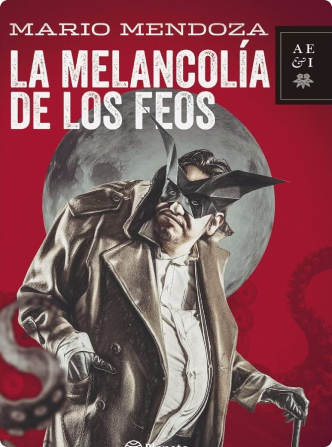

“Es inevitable que la lectura nos revele facetas insospechadas de la realidad, como si nos corriera un velo y contempláramos el mundo inmerso en una transparencia inusitada.”
Mario Mendoza
LIBRO DESTACADO
Descubre la obra de uno de los escritores colombianos más importantes de las últimas décadas. Mario Mendoza te invita a explorar su universo literario, lleno de personajes complejos y situaciones límite.
¡No te pierdas ninguna presentación, firma de libros o entrevista! En nuestra sección de eventos encontrarás toda la información para que puedas estar presente en los encuentros con el autor y enterarte de todas las noticias relacionadas
 }
}
Feria del Libro Medellín
7 de septiembre de 2024
¿Quieres vivir la experiencia de las novelas de Mario Mendoza de una forma más inmersiva? Explora la mente de uno de los autores más influyentes de la literatura latinoamericana y déjate cautivar por sus historias llenas de intriga, violencia y realismo social.